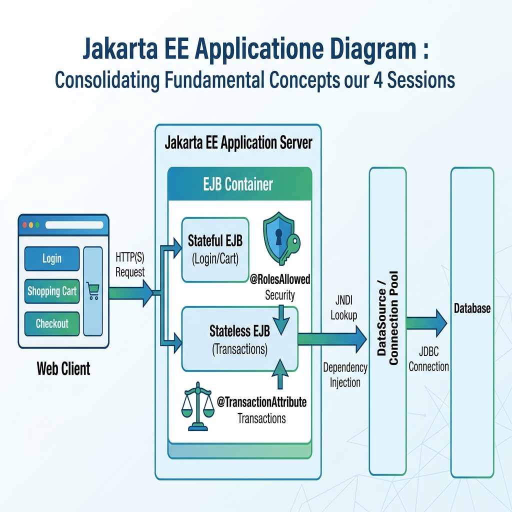

<title>Try It Yourself — Review &amp; Consolidation (Sessions 1 to 4)</title>
<meta name="viewport" content="width=device-width, initial-scale=1">
<meta name="description" content="Try It Yourself Review for Sessions 1–4: Integrated architecture combining Session Beans, JNDI, DataSources, Transactions, and Security with practical debugging.">
<link rel="stylesheet" href="assets/css/styles.css">
<script>window.PAGE = "s04t";</script>

<main class="page">

  <h1>Try It Yourself · Review &amp; Consolidation (Sessions 1–4)</h1>
  <p class="lede">You have explored the four foundational pillars of Jakarta EJB: <strong>Session Beans</strong>,
    <strong>JNDI Resources &amp; DataSources</strong>, <strong>Transactions &amp; Concurrency</strong>, and
    <strong>Enterprise Security</strong>. Now we assemble them into one cohesive multi-tier enterprise architecture and master how to debug real server integration faults.</p>

  <div class="callout callout--key"><span class="callout__i">🎯</span>
    <div class="callout__b"><b>Consolidation Objectives (from Presenter's Manual TL4)</b>
      <ol style="margin:.6rem 0 0;padding-left:1.2rem">
        <li>Synthesize isolated concepts into a multi-tier enterprise architecture</li>
        <li>Trace an end-to-end request: Web Client → Stateful Bean → Stateless Bean → JNDI DataSource → Database</li>
        <li>Diagnose and fix the top 3 production integration errors (<code>NameNotFoundException</code>, <code>EJBTransactionRolledbackException</code>, <code>EJBAccessException</code>)</li>
        <li>Complete practical evaluation exercises testing Sessions 1 to 4</li>
      </ol>
    </div>
  </div>

  <!-- =====================================================================
       4.1 The Integrated Architecture
       ===================================================================== -->
  <span class="eyebrow">consolidation</span>
  <h2>Part 1 · The Big Picture: How Everything Connects</h2>

  <p>In enterprise engineering, beans and services never exist in isolation. They form a robust, decoupled, layered pipeline:</p>

  <figure>
    
    <figcaption><b>Integrated Enterprise Flow:</b> Each layer has one distinct responsibility — State, Logic, Transaction/Security, and Data.</figcaption>
  </figure>

  <div class="tablewrap"><table>
    <thead><tr><th>Stage</th><th>Layer / Component</th><th>EJB Technology Used</th><th>Role in System</th></tr></thead>
    <tbody>
      <tr>
        <td>1</td>
        <td><strong>Web Tier</strong></td>
        <td>Servlet / JSF Controller</td>
        <td>Handles incoming HTTP request; looks up Stateful bean via JNDI</td>
      </tr>
      <tr>
        <td>2</td>
        <td><strong>Client State</strong></td>
        <td><code>@Stateful</code> Session Bean</td>
        <td>Remembers user session state (logged-in username, shopping cart) across requests</td>
      </tr>
      <tr>
        <td>3</td>
        <td><strong>Business Tier</strong></td>
        <td><code>@Stateless</code> Session Bean</td>
        <td>Executes high-throughput business logic; pooled by container</td>
      </tr>
      <tr>
        <td>4</td>
        <td><strong>Security Gate</strong></td>
        <td><code>@RolesAllowed("CUSTOMER")</code></td>
        <td>Container intercepts call; verifies client identity before method runs</td>
      </tr>
      <tr>
        <td>5</td>
        <td><strong>Transaction Boundary</strong></td>
        <td><code>@TransactionAttribute(REQUIRED)</code></td>
        <td>Container initiates ACID transaction; ensures all-or-nothing execution</td>
      </tr>
      <tr>
        <td>6</td>
        <td><strong>Data Access</strong></td>
        <td><code>@Resource DataSource</code></td>
        <td>Container injects pre-warmed connection from WildFly pool; executes SQL</td>
      </tr>
    </tbody>
  </table></div>

  <!-- =====================================================================
       4.2 The Developer's Debugging Toolkit
       ===================================================================== -->
  <span class="eyebrow">developer toolkit</span>
  <h2>Part 2 · Diagnosing the Top 3 Server Integration Faults</h2>

  <p>When wiring components across tiers, integration errors will occur. Master these three diagnoses:</p>

  <div class="callout callout--mistake"><span class="callout__i">1️⃣</span>
    <div class="callout__b"><b>Fault 1: <code>javax.naming.NameNotFoundException</code></b>
      <p style="margin:.3rem 0"><strong>Symptom:</strong> <code>NameNotFoundException: GlobalBankApp/UserBean -- service jboss.naming.context...</code></p>
      <p style="margin:.3rem 0"><strong>Root Cause:</strong> The client requested a JNDI string that does not match what WildFly registered at deployment time (often a typo, missing interface suffix, or wrong namespace).</p>
      <p style="margin:.3rem 0"><strong>Fix:</strong> Check the WildFly boot log during deployment. WildFly prints lines starting with <code>java:global/...</code>. Copy the exact string into your <code>lookup()</code>.</p>
    </div>
  </div>

  <div class="callout callout--mistake"><span class="callout__i">2️⃣</span>
    <div class="callout__b"><b>Fault 2: <code>jakarta.ejb.EJBTransactionRolledbackException</code></b>
      <p style="margin:.3rem 0"><strong>Symptom:</strong> <code>EJBTransactionRolledbackException: Transaction rolled back</code></p>
      <p style="margin:.3rem 0"><strong>Root Cause:</strong> An unhandled runtime exception occurred inside a transactional EJB method, causing the container to abort and rollback automatically.</p>
      <p style="margin:.3rem 0"><strong>Fix:</strong> The rollback is a <em>consequence</em>, not the cause! Scroll down the server console stack trace to find the <strong><code>Caused by: ...</code></strong> line (e.g., <code>NullPointerException</code> or <code>SQLException: duplicate key</code>). Fix that underlying bug.</p>
    </div>
  </div>

  <div class="callout callout--mistake"><span class="callout__i">3️⃣</span>
    <div class="callout__b"><b>Fault 3: <code>jakarta.ejb.EJBAccessException</code></b>
      <p style="margin:.3rem 0"><strong>Symptom:</strong> <code>EJBAccessException: Invocation on method is not allowed</code></p>
      <p style="margin:.3rem 0"><strong>Root Cause:</strong> The caller does not possess the role required by <code>@RolesAllowed</code>, or the user has not authenticated.</p>
      <p style="margin:.3rem 0"><strong>Fix:</strong> Verify the user credentials and role mappings in WildFly's security realm, and ensure the Web Tier forces login before invoking the protected EJB.</p>
    </div>
  </div>

  <!-- =====================================================================
       4.3 Integrated Code Walkthrough
       ===================================================================== -->
  <span class="eyebrow">code walkthrough</span>
  <h2>Part 3 · Assembling the End-to-End Code</h2>

  <div class="code-head">1. UserSessionBean.java — Stateful Client Session</div>
  <pre><code>package com.globalbank.ejb;

import jakarta.ejb.Stateful;

@Stateful
public class UserSessionBean {
    private String username;
    private int loginAttempts = 0;

    public void login(String user) {
        this.username = user;
        this.loginAttempts++;
    }

    public String getUsername() { return this.username; }
    public int getAttempts() { return this.loginAttempts; }
}</code></pre>

  <div class="code-head">2. PaymentProcessorBean.java — Secure, Transactional Business Logic</div>
  <pre><code>package com.globalbank.ejb;

import jakarta.annotation.Resource;
import jakarta.annotation.security.RolesAllowed;
import jakarta.ejb.Stateless;
import jakarta.ejb.TransactionAttribute;
import jakarta.ejb.TransactionAttributeType;
import javax.sql.DataSource;
import java.sql.Connection;
import java.sql.PreparedStatement;
import java.sql.SQLException;

@Stateless
@RolesAllowed({"CUSTOMER", "TELLER"})
public class PaymentProcessorBean {

    @Resource(lookup = "java:/jdbc/GlobalBankDB")
    private DataSource dataSource;

    @TransactionAttribute(TransactionAttributeType.REQUIRED)
    public void processPayment(int accountId, double amount) {
        String debitSql = "UPDATE accounts SET balance = balance - ? WHERE id = ?";

        try (Connection conn = dataSource.getConnection();
             PreparedStatement ps = conn.prepareStatement(debitSql)) {

            ps.setDouble(1, amount);
            ps.setInt(2, accountId);
            int rows = ps.executeUpdate();

            if (rows == 0) {
                throw new IllegalArgumentException("Account " + accountId + " does not exist!");
            }
            System.out.println("Debited $" + amount + " from account " + accountId);

        } catch (SQLException e) {
            throw new RuntimeException("Database error executing payment", e);
        }
    }
}</code></pre>

  <!-- Interactive Simulator Bench -->
  <div class="bench" data-run="canned">
    <div class="bench__head">
      <span class="dot"></span>
      <span class="kind">interactive simulation</span>
      <span class="mode">Full Pipeline Execution Trace</span>
    </div>
    <pre class="bench__code"><code>// Client connects -> Stateful session establishes -> Payment triggers
UserSessionBean session = lookup("java:global/App/UserSessionBean!UserSession");
session.login("Alice");
PaymentProcessorBean payment = lookup("java:global/App/PaymentProcessorBean!PaymentProcessor");
payment.processPayment(1001, 350.00);</code></pre>
    <div class="bench__controls">
      <button class="btn-run" type="button">Run Integrated Pipeline</button>
      <span class="bench__hint">Traces container security verification, transaction creation, and pool connection return.</span>
    </div>
    <script type="text/plain" class="bench__canned">
[07:30:15,002] [Security Context] User 'Alice' verified. Roles: [CUSTOMER]
[07:30:15,005] [Stateful Session] Created UserSessionBean instance #8821 for 'Alice'
[07:30:15,009] [EJB Interceptor] @RolesAllowed check on processPayment() -> PERMITTED
[07:30:15,011] [CMT Transaction] Opened TxId 0xca49 [REQUIRED]
[07:30:15,014] [Connection Pool] Leased connection from pool 'GlobalBankDS' (active: 1/20)
[07:30:15,018] [SQL Query] UPDATE accounts SET balance = balance - 350.00 WHERE id = 1001 -> 1 row
[07:30:15,021] [Connection Pool] Returned connection to pool (active: 0/20)
[07:30:15,023] [CMT Transaction] Committed TxId 0xca49 successfully.
[07:30:15,025] [Response] Payment of $350.00 processed for Alice.
    </script>
    <pre class="bench__out" aria-live="polite"></pre>
  </div>

  <!-- =====================================================================
       Consolidation Assessment Quiz
       ===================================================================== -->
  <span class="eyebrow">check yourself</span>
  <section class="quiz" data-quiz>
    <h3>Consolidation Assessment (Sessions 1–4)</h3>
    <script type="application/json">
    [
      {
        "q": "Which bean type should maintain shopping cart items for a specific logged-in user?",
        "opts": [
          "Stateless Session Bean",
          "Stateful Session Bean",
          "Message-Driven Bean",
          "Singleton Bean"
        ],
        "a": 1,
        "why": "Stateful Session Beans maintain conversational state with a specific client across multiple method calls."
      },
      {
        "q": "What does NameNotFoundException in JNDI indicate?",
        "opts": [
          "The user's database password expired",
          "The requested JNDI lookup string does not match any object registered on the server",
          "The server has run out of RAM",
          "The method threw a NullPointerException"
        ],
        "a": 1,
        "why": "NameNotFoundException means the name being queried does not exist in the JNDI directory."
      },
      {
        "q": "When a container-managed transaction encounters an unexpected RuntimeException, what happens by default?",
        "opts": [
          "The container commits the transaction anyway",
          "The container automatically rolls back the entire transaction",
          "The database is deleted",
          "The container asks the user via browser popup"
        ],
        "a": 1,
        "why": "Unchecked system exceptions automatically trigger an EJB CMT transaction rollback."
      },
      {
        "q": "Why must conn.close() be executed in a try-with-resources block when using a DataSource?",
        "opts": [
          "To destroy the physical database socket",
          "To release and return the pooled connection back to the server pool for reuse",
          "To format the hard disk",
          "To log the user out"
        ],
        "a": 1,
        "why": "Calling close() on a pooled DataSource connection returns the connection back to the idle pool so other requests can reuse it."
      },
      {
        "q": "What is the primary benefit of declarative security (@RolesAllowed) over programmatic security?",
        "opts": [
          "It avoids cluttering business logic with authentication and role checking code",
          "It runs 10x faster",
          "It disables SSL encryption",
          "It allows anyone to access without a password"
        ],
        "a": 0,
        "why": "Declarative security keeps business methods clean and decoupled; the container enforces permissions before method invocation."
      }
    ]
    </script>
  </section>

  <!-- =====================================================================
       Summary
       ===================================================================== -->
  <span class="eyebrow">recap</span>
  <h2>One-Line Summary</h2>
  <div class="tablewrap summary"><table><tbody>
    <tr><td><strong>Stateful Bean</strong></td><td>Remembers client state (1:1 with client conversation).</td></tr>
    <tr><td><strong>Stateless Bean</strong></td><td>High performance, pooled, stateless business operations.</td></tr>
    <tr><td><strong>JNDI DataSource</strong></td><td>Pooled connection provider injected with <code>@Resource</code>.</td></tr>
    <tr><td><strong>CMT Transaction</strong></td><td>Guarantees all-or-nothing execution with automatic rollback on errors.</td></tr>
    <tr><td><strong>Debugging</strong></td><td>Inspect WildFly deployment log for exact JNDI names; inspect 'Caused by' for rollbacks.</td></tr>
  </tbody></table></div>

</main>

<script src="assets/js/course.js"></script>
<script src="assets/js/runner.js"></script>
